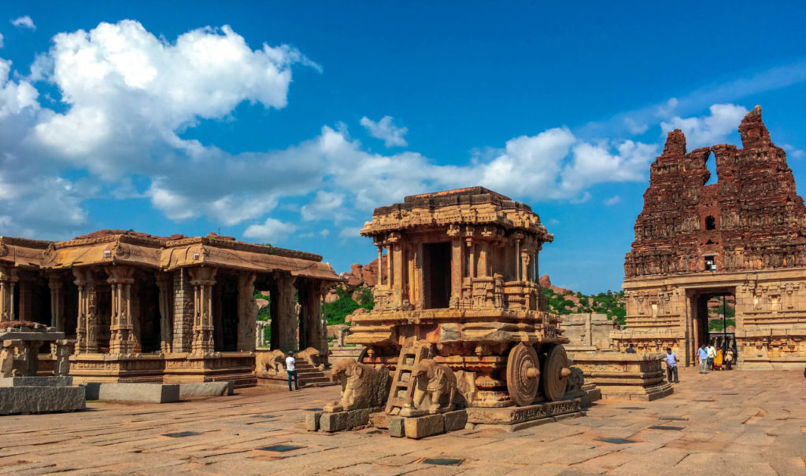

hellssssssssssssssssssssssssssssssssssssssssow

MURDESHWAR
Murdeshwar is a town in Uttara Kannada district in the state of Karnataka, India, It is famous for the world's second tallest Shiva statue, the town lies on the coast of the Arabian Sea and is also famous for the Murudeshwara Temple.[1] The town has a railway station on the Mangalore–Mumbai Konkan railway route. The origin of the name "Murdeshwar" dates to the time of Ramayana. The Hindu gods attained immortality and invincibility by worshiping a divine Linga called the Atma-Linga. The Lanka King Ravana wanted to attain immortality by obtaining the Atma-Linga (Soul of Shiva). Since the Atma-Linga belonged to Shiva, Ravana worshipped Shiva with devotion. Pleased by his prayers, Shiva appeared before him and asked him what he wanted. Ravana asked for the Atma-Linga. Shiva agreed to give him the boon on the condition that it should never be placed on the ground before he reaches Lanka. If the Atma-Linga was ever , it would be impossible to move it. Having obtained his boon, Ravana started back on his journey to Lanka.
HAMPI
Hampi or Hampe, also referred to as the Group of Monuments at Hampi, is a UNESCO World Heritage Site located in Hampi town, Vijayanagara district, east-central Karnataka, India.Hampi was the capital of the Vijayanagara Empire in the 14th century. The Vijayanagara Empire was defeated by a coalition of Muslim sultanates; its capital was conquered, pillaged and destroyed by sultanate armies in 1565, after which Hampi remained in ruins. It was a fortified city. Chronicles left by Persian and European travellers, particularly the Portuguese, say that Hampi was a prosperous, wealthy and grand city near the Tungabhadra River, with numerous temples, farms and trading markets. By 1500 CE, Hampi-Vijayanagara was the world's second-largest medieval-era city after Beijing, and probably India's richest at that time, attracting traders from Persia and Portugal.
BADAMI
Badami, formerly known as Vatapi, is a town and headquarters of a taluk by the same name, in the Bagalkot district of Karnataka, India. It was the regal capital of the Badami Chalukyas from CE 540 to 757. It is famous for its rock cut monuments such as the Badami cave temples, as well as the structural temples such as the Bhutanatha temples, Badami Shivalaya and Jambulingesvara Temple, Badami|Jambulingesvara temple. It is located in a ravine at the foot of a rugged, red sandstone outcrop that surrounds Agastya lake. Badami has been selected as one of the heritage cities for HRIDAY - Heritage City Development and Augmentation Yojana scheme of Government of India.Badami cave temples, as well as the structural temples such as the Bhutanatha temples, Badami Shivalaya and Jambulingesvara Temple, Badami|Jambulingesvara temple. It is located in a ravine at the foot of a rugged, red sandstone outcrop that surrounds Agastya lake. Badami has been selected as one
RAM SETHU
Ram Setu was first mentioned in Valmiki’s Ramayana, a Hindu epic. The bridge is believed to have been built by Lord Rama’s Vanara Sena, with instructions from Nala, for Lord Ram to reach Lanka to rescue his wife Sita. According to legend, the bridge was built using floating stones, with name of Lord Rama engraved on it, which made it unsinkable. Apparently, Lord Rama prayed to the ocean, for a path from India to Lanka, so that he could go and rescue Sita from the clutches of Ravana, the king of Lanka.Vanara Sena, with instructions from Nala, for Lord Ram to reach Lanka to rescue his wife Sita. According to legend, the bridge was built using floating stones, The western world came to know of the bridge via Ibn Khordadbeh's Book of Roads and Kingdoms (c. 850), in which he refers to it as Set Bandhai or Bridge of the Sea.[7] Some early Islamic sources refer to a mountain in Sri Lanka as Adam's Peak (where the biblical Adam supposedly fell to earth).
MYSORE PALACE

The Mysore Palace, also known as Amba Vilas Palace, is a historical palace and a royal residence (house). It is located in Mysore, Karnataka. It used to be the official residence of the Wadiyar dynasty and the seat of the Kingdom of Mysore. The palace is in the centre of Mysore, and faces the Chamundi Hills eastward. Mysore is commonly described as the 'City of Palaces', and there are seven palaces including this one. However, the Mysore Palace refers specifically to the one within the new fort.
The land on which the palace now stands was originally known as mysuru (literally, "citadel"). Yaduraya built the first palace inside the Old Fort in the 14th century, which was set ablaze and reconstructed multiple times. The Old Fort was built of wood and thus easily caught fire, while the current fort was built of stone, bricks and wood. The current structure was constructed between 1897 and 1912, after the Old Palace burnt down, the current structure is also known as the New Fort. Mysore Palace is one of the most famous tourist attractions in India, after the Taj Mahal, with more than six million annual visitors.[1]
Srikanteshwara Temple, Nanjangud
The Nanjundeshwara Temple (also called Srikanteshwara Temple) is an ancient temple dedicated to Shiva in the Hindu pilgrimage town of Nanjanagudu in Karnataka, India.[1]It is located on the right bank of river Kapila, a tributary of the Kaveri. Nanjangudu is also known as "Dakshina Prayaga" or "Prayag of South".Nanju in Kannada means poison; the name Nanjundeshwara means the "God who Drank the Poison" , a word that has its origins in the legend of the Great Churning of the Ocean of Milk; thus the town got the name 'Nanjangudu' which means "the abode of the god Nanjundeshwara".The "Dodda Jaathre" festival at Nanjangud by the temple attracts thousands of devotees. The festivities in the fair include five colorful chariots that are pulled by devotees on a path called the ratha beedi. Parasurama temple is near Nanjundeshwara temple.
The 9 storied, 120 feet tall temple Gopuram and its extensive exterior was built by Devarajammanni, the queen of the Mysore king Krishnaraja Wadiyar III.